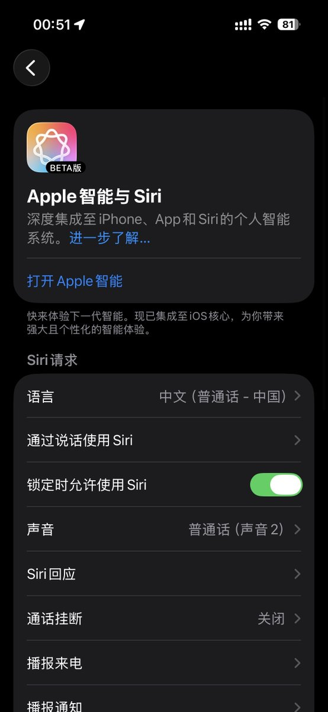
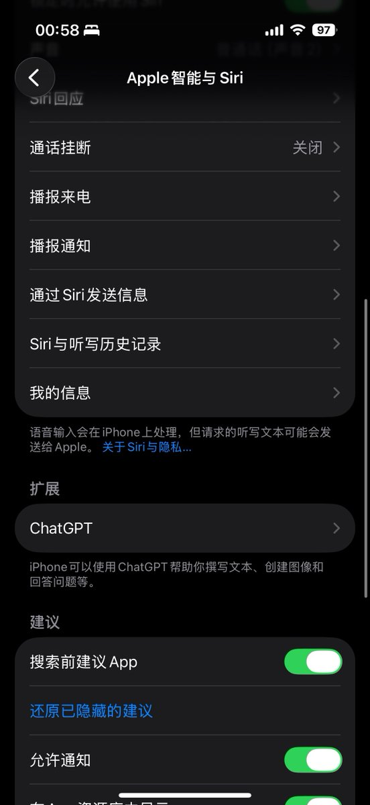
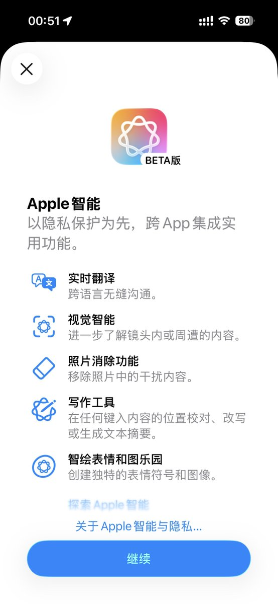
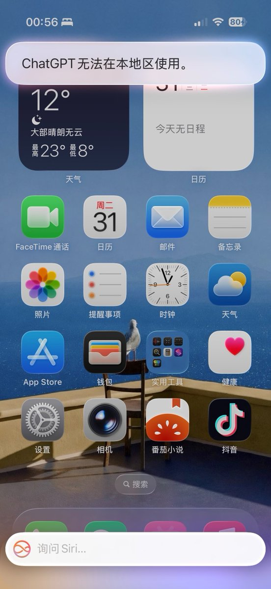

Apple 意外推送全功能的 Apple Intelligence 给国行用户，目前该功能未在完成大陆审批，功能推送已经撤回。
✅ 已经下载离线模型的设备，根据反馈似乎目前还能正常使用。
刚睡醒的国行用户，还没反应过来发生了什么的话，当做了个梦吧 😇

✅ 已经下载离线模型的设备，根据反馈似乎目前还能正常使用。
刚睡醒的国行用户，还没反应过来发生了什么的话，当做了个梦吧 😇




国行iPhone云控Apple智能，打开设置后发现Siri变成「Apple智能与Siri」了，国区Apple ID在扩展中也有ChatGPT的选项。
不过ChatGPT应该得开VPN/境外网络才能使用，会提示「ChatGPT 无法在本地区使用。」
不过应该是逐步开放，部分像国行iPhone https://t.co/Kc1gEqO6a9
不过ChatGPT应该得开VPN/境外网络才能使用，会提示「ChatGPT 无法在本地区使用。」
不过应该是逐步开放，部分像国行iPhone https://t.co/Kc1gEqO6a9